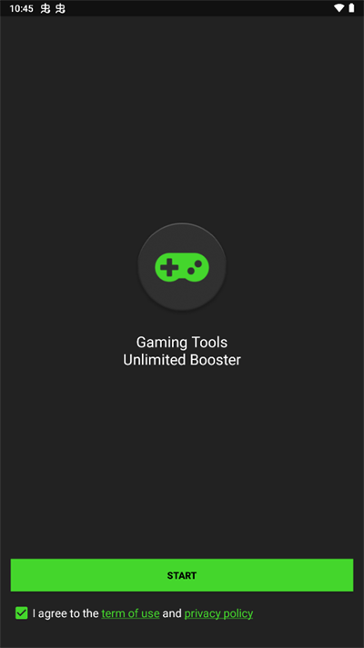

GameBooster 实战教程：装包、加速、调画质一次跑通
从 APK 转存到权限配置，再到 GFX TOOL 画质参数调整，GameBooster 全流程上手教程，附带新手最容易踩的三个坑和解法
这篇教程读完，你能独立完成 GameBooster 的装包、权限配置、添加游戏、GFX 画质调整这整套流程，并且避开新手最容易踩的三个坑。整个过程不超过十分钟，中间没有任何需要判断或决策的地方，跟着走就行。
准备：先搞清楚几件事
GameBooster 以 APK 形式分发，不走任何应用商店，它的GameBooster官网上提供了各版本的更新日志和详细功能介绍。它的前置条件很简单：Android 7.0 以上的系统版本、约 30MB 的存储空间、以及一份安装包。你需要先拿到一份安装包，从官方下载渠道获取是最稳妥的方式。这里提一句，安装包下载的正确姿势是先转存到自己的网盘再从 App 内下载，不要直接用浏览器抓直链——很多浏览器的下载管理会在中途超时或缓存文件损坏。
第一步：装包其实就五步
GameBooster 的安装流程和大多数第三方 APK 类似，但有几个细节不能跳过。我们一步一步来。
1. 转存 + 下载安装文件
拿到分享链接后，第一步是先转存到你自己的网盘，然后在网盘 App 里找到转存后的文件，点下载。安装包大小约 26MB，下载完成后确认一下文件大小在 20~30MB 之间——太小或太大都可能是下载出了问题。
2. 放行「安装未知应用」权限
Android 系统默认只允许从应用商店来源安装 APK，第三方渠道需要手动放行。不同机型的设置路径略有差异，但通用路径是：
系统设置 → 应用 → 特殊应用权限 → 安装未知应用
打开这个菜单后，你会看到手机里所有能下载文件的 App 列表——找到你刚才用它下载 GameBooster 的那个 App（网盘或浏览器），把"允许安装未知应用"的开关打开。这里注意：每个下载来源的权限是独立的，这次打开的是网盘 App 的权限，下次换浏览器下载别的 APK 还得再开一次。
3. 点开安装
回到下载记录，找到 APK 文件，点开即可开始安装。如果系统弹出一个警告说"该应用不是来自 Google Play"，这只是安全提示，点继续安装就好。
别急着跳过这一步——如果手机里之前装过别的渠道的 GameBooster（比如从其他论坛分享的版本），先卸载干净再装新版。不同签名的 APK 互相覆盖会被系统拒绝，这是新手最常遇到的安装失败原因之一。
4. 首次启动：勾选条款点 START
安装完成后打开 App，你会看到一个简洁的启动界面。界面上只有两个东西：使用条款勾选框和 START 按钮。勾选同意条款，然后点 START 进入 DASHBOARD。

5. 添加游戏 + 授权
进入 DASHBOARD 后，首页会提示你点 Add Game 按钮，把你常玩的游戏加到"点名册"里。点进去会看到已安装应用的列表，勾选你想加速的游戏，点确认就好。
这里有个关键：在添加游戏的过程中，GameBooster 会依次请求两个系统权限——「使用情况访问」和「悬浮窗权限」。这两个权限别跳过也别拒绝。前者让 GameBooster 知道哪些游戏正在前台运行，后者用于在游戏中显示 HUD 加速读数。跳过任何一个，加速和清理后台的效果都会打折扣。

DASHBOARD 里能做什么
装完加完游戏，DASHBOARD 首页就是你的日常操作入口：
- 点已添加的游戏图标直接启动，GameBooster 会自动完成清理后台和资源调度
- 右上角的 GFX TOOL 是画质调整入口，用来改分辨率、帧率、阴影等参数
- 侧边栏有清理缓存、查看加速日志等辅助功能
GFX TOOL：画质参数怎么调才不翻车
GFX TOOL 是 GameBooster 里最能折腾也最容易踩雷的模块。它调整的是游戏本地的图形设置项——和你手动进游戏设置菜单里改分辨率、帧率、阴影是同一类操作，不会修改游戏代码、不会注入内存、不会替换游戏文件。
抗锯齿三档：OFF / 2x / 4x
抗锯齿（AA）是画面边缘的柔化处理。游戏画面里的斜线、曲线在高速运动时会出现明显的锯齿感，开抗锯齿能让画面更平滑自然。GameBooster 提供了三档：
| 档位 | 画面效果 | GPU 负载 |
|---|---|---|
| OFF | 边缘锐利但有锯齿 | 最低 |
| 2x | 轻微柔化，锯齿减少 | 略增 |
| 4x | 明显柔化，画面最平滑 | 中等 |
旗舰机直接 4x 全开；中低端机选 2x 或 OFF 都行——抗锯齿的画面影响其实没那么大，尤其是 FPS 游戏中高速移动的场景里，大多数玩家根本注意不到边缘锯齿。有意思的是，有些射击类竞技玩家反而故意关掉抗锯齿让画面更"锐"，方便看清远处的敌人轮廓。
整体参数怎么选：按机型量力而行
调画质的核心原则就八个字：按机型量力而行。给你一个起步档位：
| 机型 | 分辨率 | 帧率 | 阴影 | 抗锯齿 |
|---|---|---|---|---|
| 旗舰 | FHD | 90 | ON | 4x |
| 中高端 | HD | 60 | ON/OFF | 2x |
| 低配 | SD/HD | 30/60 | OFF | OFF |
然后进游戏实测，感觉卡了就降一档，画面还能接受就往上推一档，找到最适合你那台手机的组合。更多 GFX 参数的完整列表和各游戏适配表，可以去 GameBooster 的文档里翻一翻。
新手最容易踩的三个坑
坑一：装完打开闪退或白屏
如果装完后点打开直接闪退或卡在白屏，90% 的原因是手机里残留了旧版 GameBooster 的数据。前面装包那步如果跳过了"卸载旧版"的操作就直接装了新版，系统里两个签名不同的 APK 会互相干扰。解决办法很简单：卸载所有版本的 GameBooster，清理一下系统应用数据里的残留，然后重新装。
坑二：装包时提示「无法安装」或「解析包时出现问题」
这是第二个高频卡点，按顺序排查：
- 回到第二步，确认「安装未知应用」权限真的打开了——很多机型的设置界面藏得比较深，可能打开的是系统权限但不是具体下载 App 的权限
- 确认下载文件大小在 20~30MB 之间——太小说明下载中断了，重新下载
- 如果前两个都没问题，大概率是旧版签名冲突，参照坑一的办法卸载干净再装
坑三：GFX TOOL 参数改了但进游戏没效果
很多人调完 GFX TOOL 后，从手机桌面图标直接进游戏，发现画质一点没变。这是因为 GameBooster 的 GFX 参数只有从 DASHBOARD 里点游戏图标启动才会生效。从桌面图标启动游戏，系统不会经过 GameBooster 的参数注入流程。解决办法：养成从 DASHBOARD 启动游戏的习惯。
一句进阶：竞技类游戏的安全边界
最后提一件重要的事。虽然 GameBooster 本身不改内存、不注入代码，但它的 GFX TOOL 在某些竞技游戏里可能触及灰色地带——尤其是解锁帧率上限、强行开 HDR 这类"解锁"操作。王者荣耀、和平精英等游戏对任何形式的第三方修改持零容忍态度，即使只是改画质，也有被标记的风险。
保守原则：只用保守参数（降分辨率、关阴影、锁帧率上限）这些调整；改完参数先在离线模式或训练场试玩，确认无异常再进竞技匹配。这套装包教程和 GFX 参数速查表我在GitHub、Gitee和GitCode三个仓库都同步了，怕文档站哪天访问不顺的话可以直接翻仓库里的 markdown 源码。